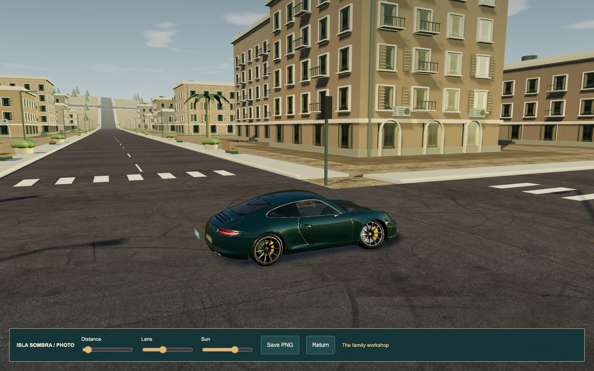
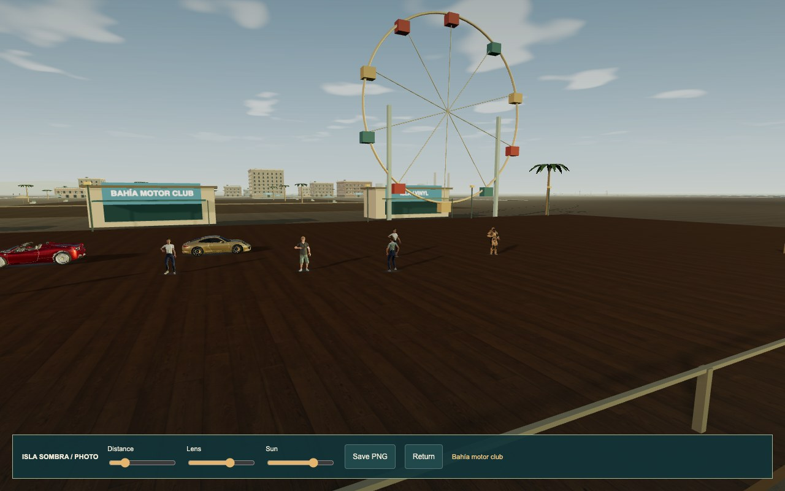
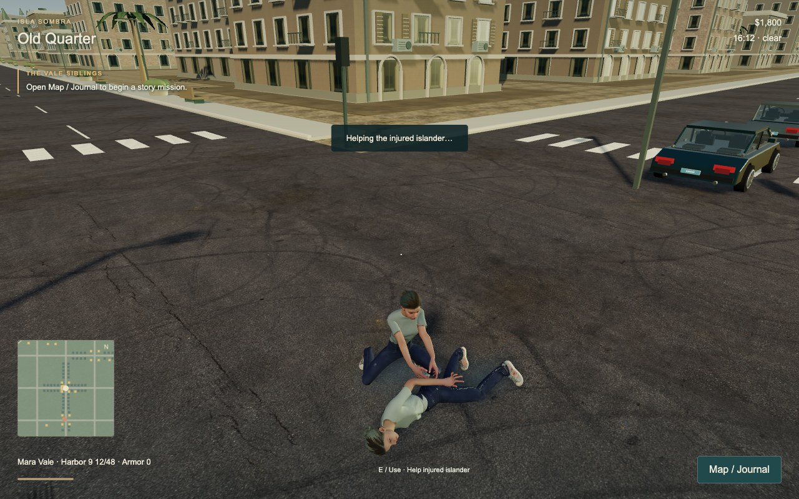
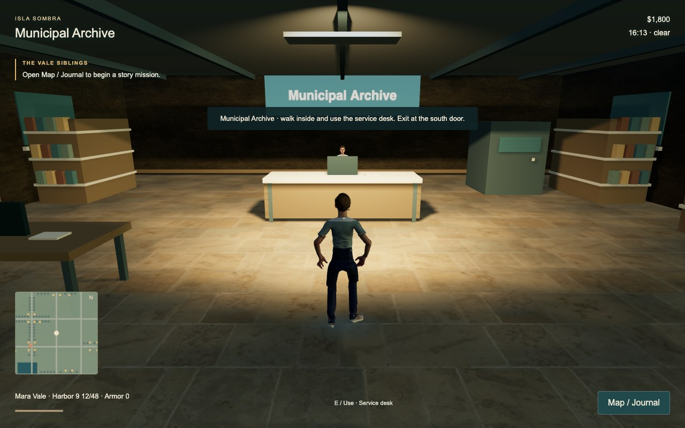
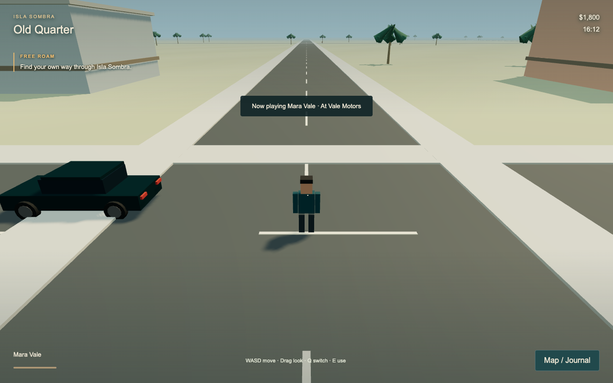
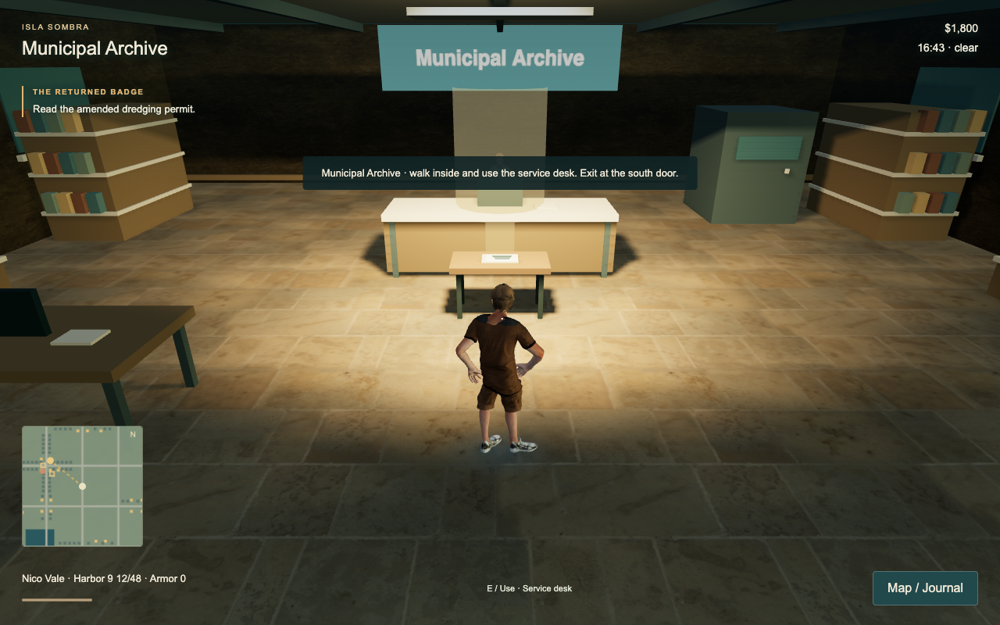

Isla Sombra · an original browser game
Low Tide
A crime sandbox about two estranged siblings, a stolen coastline and the price of taking an island back.
This is a substantial playable prototype. Its graphics, animation and simulation remain well below the observed OneState reference. The pass count measures recorded iterations, not graphical parity or a finished commercial game.
What you can play
Mara Vale, a getaway driver, and Nico Vale, a suspended port investigator, follow separate leads into a redevelopment conspiracy. Switch between them; the other sibling follows routines and takes scripted or support roles in shared operations. Their choices lead to a public case or a criminal network, followed by eight aftermath operations.
| Island | Eight districts, approximately 2.3 × 2.0 km, 128 exterior buildings and 40 useful enterable locations. |
|---|---|
| Campaign | 48 authored operations with prerequisites, dialogue and objectives. These reuse connected interaction, driving, evidence and combat systems; they are not 48 bespoke cinematic levels. |
| Vehicles and equipment | 15 classes, including a motor launch; three recognizable licensed cars: Ferrari 458, BMW M4 and Porsche 911. Other bodies are original approximations. Paint, rims, body kits, performance, armour, plates, four weapons and weapon upgrades. |
| Island life | Six repeatable jobs, three heists, three races, four expandable businesses, supplies, 24 memories, eight photo viewpoints, blackjack, a firing range and radio tuning. |
| Shared systems | Traffic and civilians, factions, delayed witness calls, police search and pursuit, wanted vehicle registrations, cover and ballistics, first aid, swimming, boat travel, weather, day/night and original synthesized radio/audio. |
Each player has an independent single-player game. Saves belong to that browser and site address; export/import in Options moves progress between devices. Business earnings accrue while playing, not while the app is closed.
Browse the actual content inventory
Reference, change and remaining gap
The official OneState App Store trailer was inspected through 592 timestamped samples across its approximately 29.6-second presentation, sampled at 20 FPS from a 24 FPS source. This was sampled coverage, not every source frame. It is edited promotional footage: it does not establish input responsiveness, HUD behaviour or device frame rate.
The optional videos below load directly from Apple's original trailer host when played. They are not copied into the game or offline package. Low Tide images are actual browser renders with their controls visible; current review scenes use labelled imported save fixtures and real control input.
Road and vehicle identity

Licensed bodywork, tyre groups, HDR lighting, photographed road materials, facades and a winding coastal route replaced the first-pass block car and plain streets. Our buildings, vegetation and reflections remain much simpler, and the street grid is visibly repetitive.
A populated place to stop

Passes 94–95 added free car loans, shops, social NPCs, a moving wheel landmark, a photo camera and a passport. Inspection of the first wide shot led to a tighter layout, collision fixes and new framing. The result still lacks the reference's density, lighting, surface detail and social animation. The wheel is decorative.
People and useful interiors


The reference's medical, arrest and terrace gestures exposed the need for more than walkers. Later passes added seated drivers/passengers, social poses, support roles and first aid, plus enclosed rooms, named contacts and physical mission clues. Pass 99 repaired horizon cloud columns and restored upright rest spines. People remain stock cast models with stiff poses, no lip sync and limited expressive animation; many interiors share layouts and furniture.
Where it started


What was actually tested
- 64 meaningful rule tests passed, covering campaign dependencies and objectives, choices, combat, vehicles, NPC response, economy, persistence and other connected rules. Rule tests do not prove visual quality.
- Mara's opening operation was played from a fresh browser with real movement, driving and interaction on an earlier source. Nico's opening was played from a fresh browser near pass 91 with real switching, walking, evidence and dialogue. Neither used imported progress, teleports or assigned rewards.
- Later scenes, joint operations, activities and the delivery route use explicitly labelled save fixtures to reach their prerequisites. The entire 48-operation campaign has not been naturally played end to end.
- Packaged Chrome and desktop WebKit 26.5 flows exercised cast decoding, walking, switching, journal pages, licensed driving, photo export and saved reload. Landscape 844 × 390 touch emulation and portrait 390 × 844 layouts were checked.
- Actual service-worker downloads were followed by browser networking being disabled and successful reload/play on both the portable localhost build and the public HTTPS site. Synthetic page-hide/show events exercised interruption handlers. Physical phone installation, incoming calls and physical-phone performance were not tested.
The final update scenario used two real archived builds in one continuous browser. A deliberately corrupted file was rejected, the old version still played offline, retry activated the verified update and cash, campaign progress, position and photo passport survived. This is a controlled browser test, not a physical-phone outage.
Measured performance
Pass 99 used a six-second driving sample after warm-up in headless Chrome with native Apple M2 Metal rendering. The table measures animation callback intervals and CPU time submitting the view. It does not measure GPU completion, worst-case island performance or phone FPS. Weather, viewpoint, geometry and quality affect results.
| Viewport / quality | Observed callbacks/s | Mean / p95 view CPU | Draw calls / triangles |
|---|---|---|---|
| Loading retained measurements… |
Full measurement values and source hashes. Earlier measured optimizations reduced static geometry and animation work; these short samples are not a promise of sustained 60 FPS.
Open, save and take it with you
Open the HTTPS game link on a phone or computer. Landscape gives touch controls more room. Start with Mara's Salt in the Engine or switch to Nico's The Returned Badge. Use the journal for leads, navigation, jobs and options. Three free demonstrator cars wait at Bahía motor club, marked in the photo passport.
On touch: left stick to move/steer, drag to look, pinch to zoom, Use to interact, Gas and Brake to drive, Switch for the sibling. More contains reload, supplies and photo. Keyboard: WASD, Shift run, E use, Q switch, F fire, R reload, C crouch, G horn, H yield, T kit, P photo, M journal.
Options → Save game offline keeps the game on that browser. Wait for the ready message before disconnecting. Use Check for updates / Update and reload for a new offline version. Files are checked against the build manifest; a failed preparation keeps the previous offline copy until a verified update activates. A browser may still evict storage; export your save. Optional external reference videos on this report need a connection.
For the portable ZIP, unzip the whole folder, install Node.js 20 or later and run node run.mjs there. Open http://127.0.0.1:8080 on that computer. For your own phone on the same Wi-Fi, run node run.mjs --lan and use the computer's actual LAN address. An internet friend should use the public HTTPS link. Opening an HTML file directly on a phone is unreliable. The included README gives static-host instructions.
Recorded production passes
Every completed pass has a retained source hash, actual browser checks, a screenshot and a compact account of the change and remaining gaps. Failed attempts remain separate. The public ledger below contains the notes and checks; original screenshots, recordings and detailed receipts remain in the production workspace.
Download the compact pass ledger
Rights and remaining limits
Low Tide's story, dialogue, map and procedural game content are original. Third-party car, character, texture and renderer rights are listed in the credits. The Porsche asset has share-alike requirements. Cast derivatives are incorporated in this game, not offered as a separate model collection. Brand names do not imply endorsement.
The central gap remains visual fidelity. Country areas are sparse, repeated architecture is obvious, traffic cars are angular, and animation, physics, combat and AI are simplified. There is no online multiplayer, full voice acting or commercial-game cinematic presentation. The experiment produced a playable browser prototype and a documented production trail; it did not demonstrate a game that looks better than OneState.